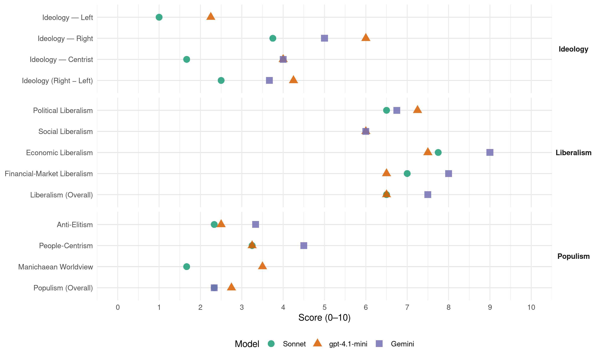

FrP (Norway, 2013)
manifesto_id 12951_201309
Get full text: This site shows derived annotations and short verbatim quotes only. The full manifesto text is © Manifesto Project / WZB — obtain it via manifesto-project.wzb.eu using the manifesto_id above.
Headline scores
| Dimension | Sonnet | gpt-4.1-mini | Gemini |
|---|---|---|---|
| Populism (Overall) | 2.3 | 2.8 | 2.3 |
| Anti-Elitism | 2.3 | 2.5 | 3.3 |
| People-Centrism | 3.2 | 3.2 | 4.5 |
| Manichaean Worldview | 1.7 | 3.5 | – |
| Ideology (Right − Left) | 2.5 | 4.2 | 3.7 |
| Liberalism (Overall) | 6.5 | 6.5 | 7.5 |
| Political Liberalism | 6.5 | 7.2 | 6.8 |
| Social Liberalism | – | 6.0 | 6.0 |
| Economic Liberalism | 7.8 | 7.5 | 9.0 |
| Financial-Market Liberalism | 7.0 | 6.5 | 8.0 |
Evidence per dimension
Economic Liberalism
Gemini · score 9.0 · verified · chunk 1
“arbeider for markedsøkonomi der den enkelte og næringslivet fritt kan operere”
fjerne fylkeskommunens/fylkesmannens innsigelsesrett i kommunale plan- og arealvedtak MARKEDSØKONOMI Fremskrittspartiet arbeider for markedsøkonomi der den enkelte og næringslivet fritt kan operere innenfor generelle rammebetingelser
Gemini · score 9.0 · verified · chunk 2
“arbeide for en liberalisering av økonomien”
I Europa som område, vil vi arbeide for en liberalisering av økonomien for å fremme vekst og velferdsutvikling.
Gemini · score 9.0 · verified · chunk 3
“konkurranse mellom ulike tjenesteleverandører”
velferds-, helse- og omsorgstjenester, fordrer verken offentlig tjenesteproduksjon eller avkall på mangfold og konkurranse mellom ulike tjenesteleverandører.
Gemini · score 9.0 · verified · chunk 4
“etablere et markedsstyrt transportmarked”
forskriftsendringene som er nødvendige for å etablere et markedsstyrt transportmarked. Myndighetenes rolle begrenses til
gpt-4.1-mini · score 9.0 · verified · chunk 1
“Fremskrittspartiet arbeider for markedsøkonomi der den enkelte og næringslivet fritt kan operere innenfor generelle rammebetingelser”
MARKEDSØKONOMI Fremskrittspartiet arbeider for markedsøkonomi der den enkelte og næringslivet fritt kan operere innenfor generelle rammebetingelser trukket opp av myndighetene. Et velfungerende marked innebærer at forbrukerne i all hovedsak styrer tilbudet gjennom sin etterspørsel.
gpt-4.1-mini · score 7.0 · verified · chunk 2
“Norge bør derfor snarest bygge ned handelsbarrierene mot utlandet”
Forholdene til andre land må bygge på prinsippene om likeverd og frihandel. Frihandel er den beste form for global arbeidsdeling med gjensidige fordeler av samhandel. Norge bør derfor snarest bygge ned handelsbarrierene mot utlandet.
gpt-4.1-mini · score 7.0 · verified · chunk 3
“Redusere el-avgiften Redusere inntektsskatten Redusere bilavgiftene Redusere krav til egenfinansiering av bolig Øke boligbygging”
For aleneboere vil disse tiltakene i sum bidra til bedre kjøpekraft og større økonomisk handlefrihet. HELSE OG OMSORG Alle velferdsordninger som folk har rett til i ulike livs-, arbeids- og helsesituasjoner, henger nært sammen og griper til dels inn i hverandre. For å sikre en god samhandling og tilby løsninger som både er de beste og de økonomisk mest fornuftige, må alle utgifter samles i samme budsjett og på samme forvaltningsnivå. Fremskrittspartiet vil derfor samle alle velferdsutgifter hos staten, slik at det uverdige spillet hvor staten og kommunene forsøker å velte utgifter over på hverandre, opphører.
gpt-4.1-mini · score 7.0 · verified · chunk 4
“fri etableringsrett for private skoler, så sant krav til kvalitet er oppfylt”
Private skoler er også viktige for at valgfriheten skal bli reell for foreldre og elever. Private skolers rett og mulighet til å utvikle sin egenart, enten det gjelder pedagogiske metoder eller livssyn, må styrkes. Det innebærer frihet til å ansette, frihet til å utforme læreplan, organisering og metode. Vi vil ha fri etableringsrett for private skoler, så sant krav til kvalitet er oppfylt.
Sonnet · score 9.0 · verified · chunk 1
“liberalisere økonomien for å skape større vekst”
Fremskrittspartiet vil: liberalisere økonomien for å skape større vekst og mer velferd ha effektive tiltak for å sikre mer konkurranse arbeide for mer frihandel
Sonnet · score 7.0 · verified · chunk 2
“Frihandel er den beste form for global”
Frihandel er den beste form for global arbeidsdeling med gjensidige fordeler av samhandel. Norge bør derfor snarest bygge ned handelsbarrierene
Sonnet · score 7.0 · verified · chunk 3
“konkurrere på like vilkår om tjenestetilbud”
Vi vil derfor at staten skal ha finansieringsansvaret for eldreomsorgen, og at både offentlige og private aktører skal ha mulighet til å konkurrere på like vilkår om tjenestetilbud.
Sonnet · score 8.0 · verified · chunk 4
“etablere et markedsstyrt transportmarked”
gjennomføre de lov- og forskriftsendringene som er nødvendige for å etablere et markedsstyrt transportmarked. Myndighetenes rolle begrenses til kjøp og salg
Financial-Market Liberalism
Gemini · score 8.0 · verified · chunk 1
“sikre et uavhengig, effektivt og kompetent finanstilsyn”
og Statens Pensjonsfond Utland sikre et uavhengig, effektivt og kompetent finanstilsyn Frihandel – toll/importvern Varer på vei
Gemini · score 8.0 · verified · chunk 2
“etableres en robust nasjonalbank”
etablering av eiendomsregistre. Det må etableres en robust nasjonalbank og en stabil, konvertibel valuta i de
Gemini · score 8.0 · verified · chunk 4
“vil kunne velge den banken man selv ønsker”
studielån på like vilkår som i dag, men vil kunne velge den banken man selv ønsker. I en globalisert verden er
gpt-4.1-mini · score 7.0 · verified · chunk 1
“FrP ønsker at Statens Pensjonsfond Utland (SPU) fortsatt skal investere hoveddelen av kapitalen i verdipapir i utlandet”
Høye oljepriser har gjort at oljefondet vokser langt raskere enn forventet. FrP ønsker at Statens Pensjonsfond Utland (SPU) fortsatt skal investere hoveddelen av kapitalen i verdipapir i utlandet. Men størrelsen gjør at man bør ha flere investeringsstrategier.
gpt-4.1-mini · score 6.0 · verified · chunk 2
“Konsesjoner og utslippstillatelser bør benyttes i gitte situasjoner og gis av Klima- og forurensningsdirektoratet (Klif)”
Påbud bør kunne benyttes der hvor det finnes anerkjente rensemetoder som kan anvendes uten urimelige høye kostnader for næringen. Konsesjoner og utslippstillatelser bør benyttes i gitte situasjoner og gis av Klima- og forurensningsdirektoratet (Klif). I konsesjonsvilkårene må det klart fremgå hvor store og hvilke type årlige utslipp det gis tillatelse til.
gpt-4.1-mini · score 5.0 · mixed · chunk 4
“skattefradrag for gaver til universiteter og forskningsinstitusjoner”
Fremskrittspartiet vil: øke bevilgninger til FoU innføre skattefradrag for gaver til universiteter og forskningsinstitusjoner at grunnforskning skal finansieres av det offentlige utvide SkatteFUNN, Brukerstyrt innovasjonsarena (BIA) og Nærings PhD forenkle byråkratiet rundt søknad om forskningsmidler at det offentlige må føre en aktiv og målrettet forskningspolitikk slik at Norge kan vokse inn i fremtiden
Sonnet · score 8.0 · verified · chunk 1
“sikre et uavhengig, effektivt og kompetent finanstilsyn”
skille Norges Bank og Statens Pensjonsfond Utland sikre et uavhengig, effektivt og kompetent finanstilsyn
Sonnet · score 6.0 · verified · chunk 2
“bank- og gjeldskrisen i Europa”
arbeide for tiltak som sikrer en bedre beredskap for å håndtere bank- og gjeldskrisen i Europa og store svingninger i internasjonal økonomi
Sonnet · score 7.0 · verified · chunk 3
“spareavtaler i bank”
gjennom private avtaler med for eksempel forsikringsselskaper eller spareavtaler i bank. Årlig innskudd inntil folketrygdens grunnbeløp (1 G) skal være skattfritt.
Sonnet · score 7.0 · verified · chunk 4
“FrP vil supplere Statens lånekasse”
FrP vil supplere Statens lånekasse for utdanning med en statlig garantiordning som den enkelte student kan benytte. Slik vil hver enkelt student være garantert studielån på like vilkår som i dag, men vil kunne velge den banken man selv ønsker.
Political Liberalism
Gemini · score 8.0 · verified · chunk 1
“folket gjennom folkeavstemninger med simpelt flertall får direkte beslutningsrett”
støtte for kravet. Vi ønsker et system der folket gjennom folkeavstemninger med simpelt flertall får direkte beslutningsrett. Likestilling Fremskrittspartiet vil ikke akseptere
Gemini · score 8.0 · verified · chunk 2
“sikre uavhengighet for domstolene”
heve straffenivået øke minimumsstraffer for alvorlige lovbrudd sikre uavhengighet for domstolene fjerne dagens kvantumsrabatt ved dom for
Gemini · score 8.0 · verified · chunk 3
“styrke både barnas og foreldrenes rettssikkerhet”
samarbeider. Vi vil styrke både barnas og foreldrenes rettssikkerhet, samtidig som vi vil gi barna rett til å slippe samvær
Gemini · score 3.0 · verified · chunk 4
“nedlegge Sametinget og avvikle samemanntallet”
Fremskrittspartiet vil: nedlegge Sametinget og avvikle samemanntallet gå imot at Norge tiltrer
gpt-4.1-mini · score 8.0 · verified · chunk 1
“Utnevnelse av dommere i Høyesterett bør godkjennes av Stortinget med to tredjedels flertall”
Vi vil sette klarere grenser for forvaltningens adgang til å treffe skjønnsmessige vedtak. Utnevnelse av dommere i Høyesterett bør godkjennes av Stortinget med to tredjedels flertall, og dommere i lavere retter bør utnevnes av domstolsadministrasjonen.
gpt-4.1-mini · score 7.0 · verified · chunk 2
“Domstolene skal sikre rask og rettferdig behandling”
Domstolene skal sikre rask og rettferdig behandling. Dette er også viktig for å unngå at personer sitter i varetekt over lang tid. Vi ser på prinsippet om at man er uskyldig til det motsatte er bevist som grunnleggende for rettssikkerheten. Vi mener domstolene og domstolsbehandlingen må moderniseres, og at saksbehandlingen må effektiviseres.
gpt-4.1-mini · score 7.0 · verified · chunk 3
“FrP vil samle alle velferdsutgifter hos staten, slik at det uverdige spillet hvor staten og kommunene forsøker å velte utgifter over på hverandre, opphører.”
Alle velferdsordninger som folk har rett til i ulike livs-, arbeids- og helsesituasjoner, henger nært sammen og griper til dels inn i hverandre. For å sikre en god samhandling og tilby løsninger som både er de beste og de økonomisk mest fornuftige, må alle utgifter samles i samme budsjett og på samme forvaltningsnivå. Fremskrittspartiet vil derfor samle alle velferdsutgifter hos staten, slik at det uverdige spillet hvor staten og kommunene forsøker å velte utgifter over på hverandre, opphører.
gpt-4.1-mini · score 7.0 · verified · chunk 4
“en fri og uavhengig presse er en forutsetning for demokratiet”
En fri og uavhengig presse er en forutsetning for demokratiet, ytringsfriheten og rettsstaten. For å sikre konkurranse og mangfold i mediene vil vi arbeide for størst mulig grad av etableringsfrihet i medienæringen.
Sonnet · score 7.0 · verified · chunk 1
“folkeavstemninger skal gis adgang til å avgjøre”
Vi vil også at folket gjennom folkeavstemninger skal gis adgang til å avgjøre viktige politiske saker.
Sonnet · score 7.0 · verified · chunk 2
“uavhengighet for domstolene”
gjennomgå straffelovgivningen for å heve straffenivået øke minimumsstraffer for alvorlige lovbrudd sikre uavhengighet for domstolene
Sonnet · score 6.0 · verified · chunk 3
“styrke brukernes rettsikkerhet”
Fremskrittspartiet ønsker å styrke brukerperspektivet og brukernes rettsikkerhet og vil derfor tilbakeføre kompetanse til førstelinjen/NAV lokalt
Sonnet · score 6.0 · verified · chunk 4
“En fri og uavhengig presse er en forutsetning for demokratiet”
En fri og uavhengig presse er en forutsetning for demokratiet, ytringsfriheten og rettsstaten. For å sikre konkurranse og mangfold i mediene
Liberalism (Overall)
Gemini · score 8.0 · verified · chunk 1
“arbeider for markedsøkonomi der den enkelte og næringslivet fritt kan operere”
fjerne fylkeskommunens/fylkesmannens innsigelsesrett i kommunale plan- og arealvedtak MARKEDSØKONOMI Fremskrittspartiet arbeider for markedsøkonomi der den enkelte og næringslivet fritt kan operere innenfor generelle rammebetingelser
Gemini · score 8.0 · verified · chunk 2
“Fremskrittspartiets liberalistiske grunnsyn bygger på”
Menneskerettigheter Fremskrittspartiets liberalistiske grunnsyn bygger på at alle mennesker har visse universelle friheter
Gemini · score 8.0 · verified · chunk 3
“konkurranse mellom ulike tjenesteleverandører”
velferds-, helse- og omsorgstjenester, fordrer verken offentlig tjenesteproduksjon eller avkall på mangfold og konkurranse mellom ulike tjenesteleverandører.
Gemini · score 6.0 · verified · chunk 4
“etablere et markedsstyrt transportmarked”
forskriftsendringene som er nødvendige for å etablere et markedsstyrt transportmarked. Myndighetenes rolle begrenses til
gpt-4.1-mini · score 8.0 · verified · chunk 1
“Fremskrittspartiet arbeider for markedsøkonomi der den enkelte og næringslivet fritt kan operere innenfor generelle rammebetingelser”
MARKEDSØKONOMI Fremskrittspartiet arbeider for markedsøkonomi der den enkelte og næringslivet fritt kan operere innenfor generelle rammebetingelser trukket opp av myndighetene. Et velfungerende marked innebærer at forbrukerne i all hovedsak styrer tilbudet gjennom sin etterspørsel.
gpt-4.1-mini · score 6.0 · verified · chunk 2
“Domstolene skal sikre rask og rettferdig behandling”
Domstolene skal sikre rask og rettferdig behandling. Dette er også viktig for å unngå at personer sitter i varetekt over lang tid. Vi ser på prinsippet om at man er uskyldig til det motsatte er bevist som grunnleggende for rettssikkerheten. Vi mener domstolene og domstolsbehandlingen må moderniseres, og at saksbehandlingen må effektiviseres.
gpt-4.1-mini · score 6.0 · verified · chunk 3
“FrP vil samle alle velferdsutgifter hos staten, slik at det uverdige spillet hvor staten og kommunene forsøker å velte utgifter over på hverandre, opphører.”
Alle velferdsordninger som folk har rett til i ulike livs-, arbeids- og helsesituasjoner, henger nært sammen og griper til dels inn i hverandre. For å sikre en god samhandling og tilby løsninger som både er de beste og de økonomisk mest fornuftige, må alle utgifter samles i samme budsjett og på samme forvaltningsnivå. Fremskrittspartiet vil derfor samle alle velferdsutgifter hos staten, slik at det uverdige spillet hvor staten og kommunene forsøker å velte utgifter over på hverandre, opphører.
gpt-4.1-mini · score 6.0 · verified · chunk 4
“en fri og uavhengig presse er en forutsetning for demokratiet”
En fri og uavhengig presse er en forutsetning for demokratiet, ytringsfriheten og rettsstaten. For å sikre konkurranse og mangfold i mediene vil vi arbeide for størst mulig grad av etableringsfrihet i medienæringen.
Sonnet · score 7.0 · verified · chunk 1
“markedsøkonomi der den enkelte og næringslivet fritt kan operere”
Fremskrittspartiet arbeider for markedsøkonomi der den enkelte og næringslivet fritt kan operere innenfor generelle rammebetingelser trukket opp av myndighetene.
Sonnet · score 6.0 · verified · chunk 2
“liberalisering av økonomien for å fremme vekst”
I Europa som område, vil vi arbeide for en liberalisering av økonomien for å fremme vekst og velferdsutvikling
Sonnet · score 7.0 · verified · chunk 3
“konkurrere på like vilkår om tjenestetilbud”
Vi vil derfor at staten skal ha finansieringsansvaret for eldreomsorgen, og at både offentlige og private aktører skal ha mulighet til å konkurrere på like vilkår om tjenestetilbud.
Sonnet · score 6.0 · verified · chunk 4
“konkurranse fremmer kvalitet”
Konkurranse fremmer kvalitet, derfor er det positivt at konkurranse blir en integrert del av rammevilkårene for norske forskere
Anti-Elitism
Gemini · score 4.0 · verified · chunk 1
“frigjøre ressurser som kan brukes på en langt bedre måte for folk flest”
departementene og direktoratene med sikte på å forenkle og avbyråkratisere dem, samt frigjøre ressurser som kan brukes på en langt bedre måte for folk flest. Fylkeskommunen Fremskrittspartiet vil fornye
Gemini · score 3.0 · verified · chunk 3
“det uverdige spillet hvor staten og kommunene”
forvaltningsnivå. Fremskrittspartiet vil derfor samle alle velferdsutgifter hos staten, slik at det uverdige spillet hvor staten og kommunene forsøker å velte utgifter over på hverandre, opphører.
Gemini · score 3.0 · verified · chunk 4
“uten at dette gir bedre undervisning”
bruker i dag mye tid på rapportering og dokumentasjon, uten at dette gir bedre undervisning. Prøver og målinger må i
gpt-4.1-mini · score 3.0 · verified · chunk 1
“Når statlig eierskap, utøves av regjeringen, via statsråder eller statsrådens valgte representant, kan det føre til misbruk av markedsmakt”
Dagens utstrakte offentlige eierskap konsentrerer makt og innflytelse på få hender. Politisk styring av bedrifter hemmer langsiktig tenkning og verdiskaping. Når statlig eierskap, utøves av regjeringen, via statsråder eller statsrådens valgte representant, kan det føre til misbruk av markedsmakt og skape usikkerhet om hensikten er politisk eller økonomisk gevinst.
gpt-4.1-mini · score 3.0 · verified · chunk 2
“en strammere kurs i innvandringspolitikken vil også gagne den folkelige forståelsen”
Utvisning alene er imidlertid ikke nok for å forebygge kriminalitet, men må kombineres med en god integreringspolitikk. En strammere kurs i innvandringspolitikken vil også gagne den folkelige forståelsen for de mange lovlydige utlendingers tilstedeværelse. FrP vil omorganisere politietaten for å styrke nærpolitiet.
gpt-4.1-mini · score 2.0 · verified · chunk 3
“FrP vil legge til rette for årlige samhandlingsøvelser med helsesektoren, brannvesenet, forsvaret og politiet.”
isasjoner må i større grad stimuleres. Disse har høy sektorkunnskap og er generelt samfunnsberedskapmessig viktige. Moms- og avgiftsfritak er viktige og gode stimuli. Det bør være statens ansvar å dekke tapt arbeidsfortjeneste når frivillige letemannskaper er ute på oppdrag. FrP vil legge til rette for årlige samhandlingsøvelser med helsesektoren, brannvesenet, forsvaret og politiet. FAMILIEPOLITIKK For Fremskrittspartiet er familien et naturlig, verdifullt og grunnleggende element som danner viktige rammer for barns oppvekst og fremtid.
gpt-4.1-mini · score 2.0 · verified · chunk 4
“nedlegge Sametinget og avvikle samemanntallet”
Fremskrittspartiet vil: nedlegge Sametinget og avvikle samemanntallet gå imot at Norge tiltrer den nordiske samekonvensjonen ILO-konvensjonen ILO-konvensjon nr. 169 hjemler grunnlag for at enkelte etniske grupperinger skal kunne gis særrettigheter på bekostning av andre innenfor et felles bosetningsområde.
Sonnet · score 3.0 · verified · chunk 1
“direktoratene både utøver politikk og har kontrollfunksjoner”
Dette har etter Fremskrittspartiets vurdering utviklet seg til en situasjon hvor direktoratene både utøver politikk og har kontrollfunksjoner. Fremskrittspartiet ønsker en gjennomgang
Sonnet · score 2.0 · verified · chunk 2
“overflødig byråkrati hos Miljøverndepartementet”
Vi ønsker å redusere overflødig byråkrati hos Miljøverndepartementet, fylkesmennene og i kommunene
Sonnet · score 2.0 · verified · chunk 3
“det uverdige spillet hvor staten og kommunene”
Fremskrittspartiet vil derfor samle alle velferdsutgifter hos staten, slik at det uverdige spillet hvor staten og kommunene forsøker å velte utgifter over på hverandre, opphører.
Sonnet · score 2.0 · mixed · chunk 4
“tunge byråkratiske kanaler”
uten at dette skal gå gjennom tunge byråkratiske kanaler. Det er bekymringsfullt at stadig mer
Ideology — Centrist
Gemini · score 4.0 · verified · chunk 1
“frigjøre ressurser som kan brukes på en langt bedre måte for folk flest”
departementene og direktoratene med sikte på å forenkle og avbyråkratisere dem, samt frigjøre ressurser som kan brukes på en langt bedre måte for folk flest. Fylkeskommunen Fremskrittspartiet vil fornye
gpt-4.1-mini · score 4.0 · verified · chunk 1
“Folket gjennom folkeavstemninger skal gis adgang til å avgjøre viktige politiske saker”
Vi vil også at folket gjennom folkeavstemninger skal gis adgang til å avgjøre viktige politiske saker. Stemmeretten skal være allmenn og ikke begrenset til bestemte etniske grupper, derfor vil vi avvikle Sametinget.
gpt-4.1-mini · score 5.0 · verified · chunk 2
“Norge bør derfor snarest bygge ned handelsbarrierene mot utlandet”
Norsk utenrikspolitikks fremste oppgave er å sikre norske interesser. Dette må gjøres ved å gripe de positive mulighetene globaliseringen gir og verne effektivt mot de truslene den fører med seg. Norske interesser sikres best gjennom et forpliktende internasjonalt samarbeid med sikte på internasjonal avspenning, varig fred, en friest mulig verdenshandel og respekt for grunnleggende menneskerettighetene. I dette arbeidet vil NATO og EU utgjøre grunnpilarene. Forholdene til andre land må bygge på prinsippene om likeverd og frihandel. Frihandel er den beste form for global arbeidsdeling med gjensidige fordeler av samhandel. Norge bør derfor snarest bygge ned handelsbarrierene mot utlandet.
gpt-4.1-mini · score 4.0 · verified · chunk 3
“FrP vil legge til rette for årlige samhandlingsøvelser med helsesektoren, brannvesenet, forsvaret og politiet.”
isasjoner må i større grad stimuleres. Disse har høy sektorkunnskap og er generelt samfunnsberedskapmessig viktige. Moms- og avgiftsfritak er viktige og gode stimuli. Det bør være statens ansvar å dekke tapt arbeidsfortjeneste når frivillige letemannskaper er ute på oppdrag. FrP vil legge til rette for årlige samhandlingsøvelser med helsesektoren, brannvesenet, forsvaret og politiet. FAMILIEPOLITIKK For Fremskrittspartiet er familien et naturlig, verdifullt og grunnleggende element som danner viktige rammer for barns oppvekst og fremtid.
gpt-4.1-mini · score 3.0 · verified · chunk 4
“Samiske og andre gruppers interesser ivaretas av de ordinære demokratisk folkevalgte organer”
Sametinget er et politisk organ som ikke er i tråd med Fremskrittspartiets demokratiske prinsipper. Dette er et organ der stemmerett og valgbarhet utelukkende er basert på etnisk tilhørighet. Vi ønsker å nedlegge Sametinget. Samiske og andre gruppers interesser ivaretas av de ordinære demokratisk folkevalgte organer i landet; kommunestyrer, fylkesting og Storting.
Sonnet · score 2.0 · verified · chunk 1
“Hvert enkelt menneske kan selv best bestemme”
Frihet for enkeltmennesket er en grunnleggende verdi for Fremskrittspartiet. Hvert enkelt menneske kan selv best bestemme hva som er rett for seg selv
Sonnet · score 2.0 · verified · chunk 2
“folkelig og ansvarlig politi”
Fremskrittspartiet ønsker et troverdig, moderne, handlekraftig, folkelig og ansvarlig politi
Sonnet · score 1.0 · verified · chunk 3
“den enkeltes behov”
Endringene må medføre at det blir enklere for brukerne og at organiseringen tilpasses brukernes behov.
Ideology — Left
gpt-4.1-mini · score 2.0 · verified · chunk 1
“Dagens utstrakte offentlige eierskap konsentrerer makt og innflytelse på få hender”
Dagens utstrakte offentlige eierskap konsentrerer makt og innflytelse på få hender. Politisk styring av bedrifter hemmer langsiktig tenkning og verdiskaping. Når statlig eierskap, utøves av regjeringen, via statsråder eller statsrådens valgte representant, kan det føre til misbruk av markedsmakt og skape usikkerhet om hensikten er politisk eller økonomisk gevinst.
gpt-4.1-mini · score 2.0 · verified · chunk 2
“bistanden bør også konsentreres tematisk og geografisk slik at vi kan forvalte den godt”
Dagens bistand har ifølge økonomiske eksperter liten eller ingen virkning i mottakerlandene fordi u-hjelpen gis til de landene som har den dårligste økonomiske politikken. Bistand bør kanaliseres til de landene som arbeider aktivt for å åpne for frihandel, oppheve prisreguleringer og er villige til å balansere sine offentlige budsjetter. Bistanden bør også konsentreres tematisk og geografisk slik at vi kan forvalte den godt.
gpt-4.1-mini · score 3.0 · verified · chunk 3
“Redusere el-avgiften Redusere inntektsskatten Redusere bilavgiftene Redusere krav til egenfinansiering av bolig Øke boligbygging”
For aleneboere vil disse tiltakene i sum bidra til bedre kjøpekraft og større økonomisk handlefrihet. HELSE OG OMSORG Alle velferdsordninger som folk har rett til i ulike livs-, arbeids- og helsesituasjoner, henger nært sammen og griper til dels inn i hverandre. For å sikre en god samhandling og tilby løsninger som både er de beste og de økonomisk mest fornuftige, må alle utgifter samles i samme budsjett og på samme forvaltningsnivå. Fremskrittspartiet vil derfor samle alle velferdsutgifter hos staten, slik at det uverdige spillet hvor staten og kommunene forsøker å velte utgifter over på hverandre, opphører.
gpt-4.1-mini · score 2.0 · verified · chunk 4
“gradvis redusere subsidier til reindrift”
Fremskrittspartiet vil: redusere byråkratiet overfor reindriftsnæringen behandle reindriftsnæringen som andre næringer arbeide for en fornuftig og forutsigbar ressursforvaltning av offentlige beitemarker gradvis redusere subsidier til reindrift Duodji Duodji er et samlebegrep på ulike samiske virksomheter innen husflid, kunsthåndverk, sløyd og småindustri og er med på å bidra til å opprettholde samisk kultur og tradisjon.
Sonnet · score 1.0 · verified · chunk 1
“sikre fattige lands markedsadgang til Norge”
arbeide for mer frihandel sikre fattige lands markedsadgang til Norge
Sonnet · score 1.0 · verified · chunk 2
“full erstatning til grunneiere, næringsdrivende”
at det skal pålegges staten å gi full erstatning til grunneiere, næringsdrivende eller andre som lider tap
Sonnet · score 1.0 · verified · chunk 3
“konkurranse om å være best på kvalitet”
Slik likebehandling vil stimulere til kreativitet og konkurranse om å være best på kvalitet. For at brukerne skal kunne gjøre gode og riktige valg
Ideology (Right − Left)
Gemini · score 4.0 · verified · chunk 1
“veien fra folk flest til makten”
og innflytelse over sin egen hverdag og sitt eget lokalmiljø. Veien fra folk flest til makten på Stortinget og i regjeringskvartalene er ofte
Gemini · score 3.0 · verified · chunk 3
“hijab, niqab og burka er kvinneundertrykkende”
arbeidsmarkedets behov. FrP mener at hijab, niqab og burka er kvinneundertrykkende plagg. Disse skal derfor ikke brukes i grunnskolen.
Gemini · score 4.0 · verified · chunk 4
“forståelse av det norske samfunnet og norske verdier”
matematikk, naturfag og IKT, samt forståelse av det norske samfunnet og norske verdier, vil bli stadig viktigere i en
gpt-4.1-mini · score 3.0 · verified · chunk 1
“Stemmeretten skal være allmenn og ikke begrenset til bestemte etniske grupper, derfor vil vi avvikle Sametinget”
Vi vil også at folket gjennom folkeavstemninger skal gis adgang til å avgjøre viktige politiske saker. Stemmeretten skal være allmenn og ikke begrenset til bestemte etniske grupper, derfor vil vi avvikle Sametinget. Vi vil sette klarere grenser for forvaltningens adgang til å treffe skjønnsmessige vedtak.
gpt-4.1-mini · score 5.0 · verified · chunk 2
“innvandringsstoppen håndheves effektivt innføre kommunal vetorett mot etablering av asylmottak”
Fremskrittspartiet vil: at Norges mottak av mennesker fra land utenfor den vestlige kulturkrets begrenses kraftig innføre en aktiv integreringspolitikk som bygger på norske regler, normer og verdier at kriteriene for å gi asyl skal tolkes strengt og at innvandringsstoppen håndheves effektivt innføre kommunal vetorett mot etablering av asylmottak begrense familieinnvandringsordningen til ektefelle over 24 år, og egne barn under 18 år.
gpt-4.1-mini · score 5.0 · verified · chunk 3
“FrP mener at hijab, niqab og burka er kvinneundertrykkende plagg. Disse skal derfor ikke brukes i grunnskolen.”
FrP vil ha en fleksibel grunnskole hvor hver enkelt elevs kunnskapsnivå skal vektlegges mer. Vi vil ha en fleksibel grunnskole hvor hver enkelt elevs kunnskapsnivå skal vektlegges mer. FrP mener at hijab, niqab og burka er kvinneundertrykkende plagg. Disse skal derfor ikke brukes i grunnskolen. FrP ønsker et sterkt offentlig engasjement innen høyere utdanning.
gpt-4.1-mini · score 4.0 · verified · chunk 4
“nedlegge Sametinget og avvikle samemanntallet”
Fremskrittspartiet vil: nedlegge Sametinget og avvikle samemanntallet gå imot at Norge tiltrer den nordiske samekonvensjonen ILO-konvensjonen ILO-konvensjon nr. 169 hjemler grunnlag for at enkelte etniske grupperinger skal kunne gis særrettigheter på bekostning av andre innenfor et felles bosetningsområde.
Sonnet · score 2.0 · verified · chunk 1
“liberalisere økonomien for å skape større vekst”
Fremskrittspartiet vil: liberalisere økonomien for å skape større vekst og mer velferd
Sonnet · score 3.0 · verified · chunk 2
“begrenses kraftig innføre en aktiv integreringspolitikk”
at Norges mottak av mennesker fra land utenfor den vestlige kulturkrets begrenses kraftig innføre en aktiv integreringspolitikk
Sonnet · score 2.0 · verified · chunk 3
“Det norske velferdssystemet er sårbart for høy innvandring”
Økt arbeidsinnvandring fra EØS-land og rask opptjening av velferdsgoder har ført til økt eksport av enkelte velferdsordninger. Det norske velferdssystemet er sårbart for høy innvandring.
Sonnet · score 3.0 · verified · chunk 4
“norske verdier, vil bli stadig viktigere”
forståelse av det norske samfunnet og norske verdier, vil bli stadig viktigere i en internasjonal verden
Ideology — Right
Gemini · score 5.0 · verified · chunk 1
“avvikle Sametinget”
ikke begrenset til bestemte etniske grupper, derfor vil vi avvikle Sametinget. Vi vil sette klarere grenser for forvaltningens
Gemini · score 4.0 · verified · chunk 3
“hijab, niqab og burka er kvinneundertrykkende”
arbeidsmarkedets behov. FrP mener at hijab, niqab og burka er kvinneundertrykkende plagg. Disse skal derfor ikke brukes i grunnskolen.
Gemini · score 6.0 · verified · chunk 4
“forståelse av det norske samfunnet og norske verdier”
matematikk, naturfag og IKT, samt forståelse av det norske samfunnet og norske verdier, vil bli stadig viktigere i en
gpt-4.1-mini · score 3.0 · verified · chunk 1
“Stemmeretten skal være allmenn og ikke begrenset til bestemte etniske grupper, derfor vil vi avvikle Sametinget”
Vi vil også at folket gjennom folkeavstemninger skal gis adgang til å avgjøre viktige politiske saker. Stemmeretten skal være allmenn og ikke begrenset til bestemte etniske grupper, derfor vil vi avvikle Sametinget. Vi vil sette klarere grenser for forvaltningens adgang til å treffe skjønnsmessige vedtak.
gpt-4.1-mini · score 7.0 · verified · chunk 2
“at Norges mottak av mennesker fra land utenfor den vestlige kulturkrets begrenses kraftig”
Fremskrittspartiet vil: at Norges mottak av mennesker fra land utenfor den vestlige kulturkrets begrenses kraftig innføre en aktiv integreringspolitikk som bygger på norske regler, normer og verdier at kriteriene for å gi asyl skal tolkes strengt og at innvandringsstoppen håndheves effektivt innføre kommunal vetorett mot etablering av asylmottak begrense familieinnvandringsordningen til ektefelle over 24 år, og egne barn under 18 år.
gpt-4.1-mini · score 7.0 · verified · chunk 3
“FrP mener at hijab, niqab og burka er kvinneundertrykkende plagg. Disse skal derfor ikke brukes i grunnskolen.”
FrP vil ha en fleksibel grunnskole hvor hver enkelt elevs kunnskapsnivå skal vektlegges mer. Vi vil ha en fleksibel grunnskole hvor hver enkelt elevs kunnskapsnivå skal vektlegges mer. FrP mener at hijab, niqab og burka er kvinneundertrykkende plagg. Disse skal derfor ikke brukes i grunnskolen. FrP ønsker et sterkt offentlig engasjement innen høyere utdanning.
gpt-4.1-mini · score 7.0 · verified · chunk 4
“nedlegge Sametinget og avvikle samemanntallet”
Fremskrittspartiet vil: nedlegge Sametinget og avvikle samemanntallet gå imot at Norge tiltrer den nordiske samekonvensjonen ILO-konvensjonen ILO-konvensjon nr. 169 hjemler grunnlag for at enkelte etniske grupperinger skal kunne gis særrettigheter på bekostning av andre innenfor et felles bosetningsområde.
Sonnet · score 3.0 · verified · chunk 1
“avvikle Sametinget”
Stemmeretten skal være allmenn og ikke begrenset til bestemte etniske grupper, derfor vil vi avvikle Sametinget.
Sonnet · score 5.0 · verified · chunk 2
“Norges mottak av mennesker fra land utenfor”
at Norges mottak av mennesker fra land utenfor den vestlige kulturkrets begrenses kraftig
Sonnet · score 3.0 · verified · chunk 3
“norske velferdsordninger er under press”
Økt arbeidsinnvandring fra EØS-land og rask opptjening av velferdsgoder har ført til økt eksport av enkelte velferdsordninger. Det norske velferdssystemet er sårbart for høy innvandring.
Sonnet · score 4.0 · verified · chunk 4
“Den kristne og humanistiske arven skal stå i en særstilling”
Gode kunnskaper i norsk, engelsk, matematikk, naturfag og IKT, samt forståelse av det norske samfunnet og norske verdier… Den kristne og humanistiske arven skal stå i en særstilling.
Manichaean Worldview
gpt-4.1-mini · score 4.0 · verified · chunk 2
“kriminalitet som utøves av utlendinger, gir lovlydige innvandrere et dårlig renommé”
Kampen mot kriminelle må skjerpes. Kriminalitet som utøves av utlendinger, gir lovlydige innvandrere et dårlig renommé. Alle utenlandske statsborgere som blir straffet med mer enn tre måneders ubetinget fengsel, skal utvises. Utvisning alene er imidlertid ikke nok for å forebygge kriminalitet, men må kombineres med en god integreringspolitikk.
gpt-4.1-mini · score 3.0 · verified · chunk 4
“ILO-konvensjon nr. 169 hjemler grunnlag for at enkelte etniske grupperinger skal kunne gis særrettigheter”
Fremskrittspartiet vil: nedlegge Sametinget og avvikle samemanntallet gå imot at Norge tiltrer den nordiske samekonvensjonen ILO-konvensjonen ILO-konvensjon nr. 169 hjemler grunnlag for at enkelte etniske grupperinger skal kunne gis særrettigheter på bekostning av andre innenfor et felles bosetningsområde.
Sonnet · score 2.0 · verified · chunk 1
“Politisk styring av bedrifter hemmer langsiktig tenkning”
Dagens utstrakte offentlige eierskap konsentrerer makt og innflytelse på få hender. Politisk styring av bedrifter hemmer langsiktig tenkning og verdiskaping.
Sonnet · score 2.0 · verified · chunk 2
“spekulativt og opportunistisk når noen grupper”
er det spekulativt og opportunistisk når noen grupper kobler enhver flom, hete- eller kuldebølge
Sonnet · score 1.0 · verified · chunk 3
“urettferdig og udemokratisk”
Derfor oppfattes den nye ordningen som urettferdig og udemokratisk. Vi vil derfor arbeide for at det statlige bidraget skal omfatte alle pensjonister.
People-Centrism
Gemini · score 5.0 · verified · chunk 1
“folket gjennom folkeavstemninger skal gis adgang”
stortingsvalg skal telle likt. Vi vil også at folket gjennom folkeavstemninger skal gis adgang til å avgjøre viktige politiske saker. Stemmeretten
Gemini · score 4.0 · verified · chunk 4
“pengene kommer folk flest til gode”
offentlige bruker penger på kulturtiltak, er det viktig at pengene kommer folk flest til gode. Barn og unge bør prioriteres
gpt-4.1-mini · score 2.0 · verified · chunk 1
“Folket gjennom folkeavstemninger skal gis adgang til å avgjøre viktige politiske saker”
Vi vil også at folket gjennom folkeavstemninger skal gis adgang til å avgjøre viktige politiske saker. Stemmeretten skal være allmenn og ikke begrenset til bestemte etniske grupper, derfor vil vi avvikle Sametinget.
gpt-4.1-mini · score 5.0 · verified · chunk 2
“innbyggerne skal ha trygghet for at det offentlige ikke kontrollerer privatlivet”
Innbyggerne skal ha trygghet for at det offentlige ikke kontrollerer privatlivet. Vi ønsker derfor å begrense bruken av overvåkning med unntak av de saker som gjelder rikets sikkerhet og alvorlig kriminalitet. Domstolene skal godkjenne bruk av overvåkning.
gpt-4.1-mini · score 3.0 · verified · chunk 3
“For Fremskrittspartiet er familien et naturlig, verdifullt og grunnleggende element som danner viktige rammer for barns oppvekst og fremtid.”
FrP vil legge til rette for årlige samhandlingsøvelser med helsesektoren, brannvesenet, forsvaret og politiet. FAMILIEPOLITIKK For Fremskrittspartiet er familien et naturlig, verdifullt og grunnleggende element som danner viktige rammer for barns oppvekst og fremtid. Vi anser familien for å være en svært viktig tradisjons- og kulturbærer, og mener at familiens stilling i det norske samfunnet skal styrkes fremfor at det offentlige i stadig større grad ønsker å ta avgjørelser for familien.
gpt-4.1-mini · score 3.0 · verified · chunk 4
“Samiske og andre gruppers interesser ivaretas av de ordinære demokratisk folkevalgte organer”
Sametinget er et politisk organ som ikke er i tråd med Fremskrittspartiets demokratiske prinsipper. Dette er et organ der stemmerett og valgbarhet utelukkende er basert på etnisk tilhørighet. Vi ønsker å nedlegge Sametinget. Samiske og andre gruppers interesser ivaretas av de ordinære demokratisk folkevalgte organer i landet; kommunestyrer, fylkesting og Storting.
Sonnet · score 4.0 · verified · chunk 1
“frigjøre ressurser som kan brukes på en langt bedre måte for folk flest”
med sikte på å forenkle og avbyråkratisere dem, samt frigjøre ressurser som kan brukes på en langt bedre måte for folk flest.
Sonnet · score 3.0 · verified · chunk 2
“skattebetalernes penger og innbyggernes ønske”
Man skal ha respekt for skattebetalernes penger og innbyggernes ønske om forutsigbarhet og fleksibilitet
Sonnet · score 3.0 · verified · chunk 3
“den enkeltes behov”
Familien bør i større grad kunne tilpasse og organisere hverdagen ut fra den enkelte families behov. Vi vil derfor i småbarnsperioden prioritere valgfrihet
Sonnet · score 3.0 · verified · chunk 4
“Folk flest ønsker å bevege seg raskt”
Næringslivet må få sine varer og tjenester raskt og enkelt frem til markedene. Folk flest ønsker å bevege seg raskt mellom bolig, arbeid, og fritidsaktiviteter.
Populism (Overall)
Gemini · score 3.0 · verified · chunk 1
“veien fra folk flest til makten”
og innflytelse over sin egen hverdag og sitt eget lokalmiljø. Veien fra folk flest til makten på Stortinget og i regjeringskvartalene er ofte
Gemini · score 2.0 · verified · chunk 3
“det uverdige spillet hvor staten og kommunene”
forvaltningsnivå. Fremskrittspartiet vil derfor samle alle velferdsutgifter hos staten, slik at det uverdige spillet hvor staten og kommunene forsøker å velte utgifter over på hverandre, opphører.
Gemini · score 2.0 · verified · chunk 4
“pengene kommer folk flest til gode”
offentlige bruker penger på kulturtiltak, er det viktig at pengene kommer folk flest til gode. Barn og unge bør prioriteres
gpt-4.1-mini · score 2.0 · verified · chunk 1
“Når statlig eierskap, utøves av regjeringen, via statsråder eller statsrådens valgte representant, kan det føre til misbruk av markedsmakt”
Dagens utstrakte offentlige eierskap konsentrerer makt og innflytelse på få hender. Politisk styring av bedrifter hemmer langsiktig tenkning og verdiskaping. Når statlig eierskap, utøves av regjeringen, via statsråder eller statsrådens valgte representant, kan det føre til misbruk av markedsmakt og skape usikkerhet om hensikten er politisk eller økonomisk gevinst.
gpt-4.1-mini · score 4.0 · verified · chunk 2
“En strammere kurs i innvandringspolitikken vil også gagne den folkelige forståelsen”
Utvisning alene er imidlertid ikke nok for å forebygge kriminalitet, men må kombineres med en god integreringspolitikk. En strammere kurs i innvandringspolitikken vil også gagne den folkelige forståelsen for de mange lovlydige utlendingers tilstedeværelse. FrP vil omorganisere politietaten for å styrke nærpolitiet.
gpt-4.1-mini · score 2.0 · verified · chunk 3
“For Fremskrittspartiet er familien et naturlig, verdifullt og grunnleggende element som danner viktige rammer for barns oppvekst og fremtid.”
FrP vil legge til rette for årlige samhandlingsøvelser med helsesektoren, brannvesenet, forsvaret og politiet. FAMILIEPOLITIKK For Fremskrittspartiet er familien et naturlig, verdifullt og grunnleggende element som danner viktige rammer for barns oppvekst og fremtid. Vi anser familien for å være en svært viktig tradisjons- og kulturbærer, og mener at familiens stilling i det norske samfunnet skal styrkes fremfor at det offentlige i stadig større grad ønsker å ta avgjørelser for familien.
gpt-4.1-mini · score 3.0 · verified · chunk 4
“nedlegge Sametinget og avvikle samemanntallet”
Fremskrittspartiet vil: nedlegge Sametinget og avvikle samemanntallet gå imot at Norge tiltrer den nordiske samekonvensjonen ILO-konvensjonen ILO-konvensjon nr. 169 hjemler grunnlag for at enkelte etniske grupperinger skal kunne gis særrettigheter på bekostning av andre innenfor et felles bosetningsområde.
Sonnet · score 3.0 · verified · chunk 1
“folk flest til makten på Stortinget”
Veien fra folk flest til makten på Stortinget og i regjeringskvartalene er ofte lang og kronglete
Sonnet · score 2.0 · verified · chunk 2
“skattebetalernes penger og innbyggernes ønske”
Man skal ha respekt for skattebetalernes penger og innbyggernes ønske om forutsigbarhet og fleksibilitet
Sonnet · score 2.0 · verified · chunk 3
“det uverdige spillet hvor staten og kommunene”
Fremskrittspartiet vil derfor samle alle velferdsutgifter hos staten, slik at det uverdige spillet hvor staten og kommunene forsøker å velte utgifter over på hverandre, opphører.
Sonnet · score 2.0 · mixed · chunk 4
“tunge byråkratiske kanaler”
uten at dette skal gå gjennom tunge byråkratiske kanaler. Det er bekymringsfullt at stadig mer
Social Liberalism